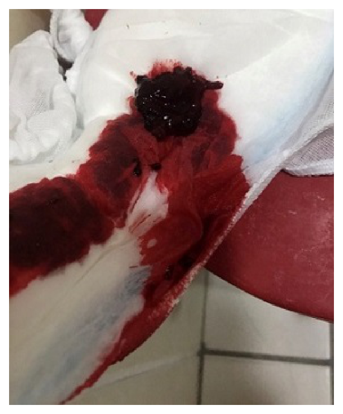

第 1 題
有關我國母嬰親善醫院之認證基準，下列敘述何者錯誤？
- （A）提供孕婦哺餵母乳相關衛教及指導
- （B）在醫療需求下，可提供母乳以外的食物或飲料
- （C）施行親子同室，依嬰兒需求哺餵母乳
- （D）嬰兒哭泣時可提供安撫奶嘴
答案：（D）
詳解與考點
母嬰親善醫院十大步驟明確規定：不得提供安撫奶嘴給哺乳嬰兒，以免造成乳頭混淆、影響母乳哺餵成功率。選項 A（哺乳衛教）、B（醫療需求可補充）、C（親子同室按需哺餵）均符合認證基準；D 項提供安撫奶嘴違反規定，為錯誤敘述。
這一頁是民國 115 年護理師產兒科護理學的整份歷屆試題，共 50 題，題目與標準答案出自考選部「國家考試試題及測驗式試題答案」開放資料，其中 50 題附有詳解。以下逐題列出題幹、選項與答案；要計時作答或記錄成績，請用線上練習。
考選部原始場次代碼：115030
線上作答這一科 →第 1 題
答案：（D）
母嬰親善醫院十大步驟明確規定：不得提供安撫奶嘴給哺乳嬰兒，以免造成乳頭混淆、影響母乳哺餵成功率。選項 A（哺乳衛教）、B（醫療需求可補充）、C（親子同室按需哺餵）均符合認證基準；D 項提供安撫奶嘴違反規定，為錯誤敘述。
第 2 題
答案：（D）
懷孕期間雌性素（estrogen）會刺激骨髓造血，使白血球（主要是嗜中性球）增加，D 為正確答案。A 錯，血漿蛋白因稀釋效應而下降；B 錯，凝血因子 VII、VIII、IX、X 於妊娠期間增加以預防產後出血；C 錯，血漿量增加幅度大於紅血球增加幅度，導致血比容下降（生理性貧血）。
第 3 題
答案：（D）
進食後立即刷牙或喝水，胃剛撐脹，可能因胃液逆流加重噁心感，且刷牙時舌根刺激易誘發嘔吐，屬較不合適的建議（D）。hCG 濃度高峰在懷孕前三個月（A 正確）、空腹或油膩食物誘發噁心（B 正確）、嚴重孕吐可用維生素 B6（C 正確）。
第 4 題
答案：（B）
拉梅茲法（Lamaze method）源自巴甫洛夫條件反射理論，經法國產科醫師 Fernand Lamaze 引入，透過呼吸技巧與放鬆訓練，幫助準父母對生產建立正向條件反射（B 正確）。A 錯，並非瑜珈；C 錯，強調夫妻協同而非單方配合；D 錯，Dick-Read 強調「恐懼—緊張—疼痛」循環，不使用預防性藥物，與拉梅茲不同。
第 5 題
答案：（A）
妊娠 10 週屬第一孕期，此時唐氏症篩檢適用組合為：超音波頸部透明帶(NT)＋母血 β-hCG+PAPP-A（第一孕期整合篩檢），選項 A 的檢測（甲型蛋白 AFP＋β-hCG+inhibin A＋雌三醇）屬第二孕期四項唐篩，在 10 週執行最不適當。
第 6 題
答案：（B）
下背痛主因是子宮增大使骨盆前傾、腰椎前凸加劇，骨盆搖擺運動（pelvic tilt/rocking）可強化腹肌、矯正骨盆位置、減輕腰薦部壓力，是首選運動（B）。凱格爾運動針對骨盆底肌；雙腿抬舉和盤腿坐對下背痛的直接緩解效果不如骨盆搖擺。
第 7 題
答案：（B）
子宮頸擴張 4 cm、先露高度 0（已銜接）、羊膜完整、胎心音正常，產婦無高危情況，符合可下床活動的條件。直立姿勢有助於胎頭下降、縮短產程。護理師應鼓勵下床走動並叮嚀注意安全（B）。限制活動或以「羊膜容易破裂」為由禁止下床，缺乏根據。
第 8 題
答案：（B）
第二產程為子宮頸全開（10 cm）至胎兒娩出。題目：下午 3 點子宮頸全開，下午 4 點 10 分娩出胎兒，歷時 1 小時 10 分鐘（B）。第一產程為規律宮縮開始至子宮頸全開；第三產程為胎兒娩出至胎盤娩出。
第 9 題
答案：（B）
持續電子胎心音監測（continuous EFM）目前實證顯示可增加剖腹產率，但不能改善健康、低風險產婦的胎兒結局。對低風險健康待產婦，指引建議間斷式聽診（intermittent auscultation）而非持續監測，故 B 敘述最不恰當。A、C、D 均正確。
第 10 題
答案：（C）
本題問「最不適當」者，答案為 C。妊娠高血壓（含子癇前症）的待產婦不建議採「半坐臥」生產姿勢，主要因為仰臥或半坐臥時增大的子宮可能壓迫下腔靜脈，造成仰臥位低血壓並減少子宮胎盤灌流，對血壓控制與胎兒供氧不利；此類產婦較適合採左側臥以改善靜脈回流與胎盤血流，故 C 為最不適當的敘述。A 正確：許多待產婦反映直立前傾姿勢相對最不痛，且有助於借重力促進產程。B 正確：蹲姿可增大骨盆出口的橫徑（前後徑與橫徑略增），有利胎頭下降。D 正確：前傾跪姿可促進胎兒由枕後位轉為枕前位，適合枕後位的待產婦。
第 11 題
答案：（C）
產婦出現雙腿抖動（下肢顫抖）、出血量增多、宮縮變密且更強、情緒轉為專注內觀而非對外交談，這些特徵為活動期（active phase）子宮頸快速擴張（4～7 cm 以上）的典型表現。子宮頸擴張速率加快、疼痛強度明顯上升，產婦往往無法再聊天，符合 C 選項。
第 12 題
答案：（C）
母嬰親善原則及身心健康照護均指出，當產婦疲憊需要休息時，嬰兒可暫送護理站照護，不應強制執行親子同室。親子同室應「依產婦需求彈性調整」而非強制要求，否則可能影響母親恢復，故選項 C 的做法錯誤。
第 13 題

答案：（A）
產後第 9 天、G3P3、早產剖腹產，排出約 50 元硬幣大小血塊後仍持續出血，最可能是子宮復舊不全（subinvolution）或胎盤殘留，而非子宮破裂。子宮破裂在剖腹產後不尋常，選項 A 的「建議直接就醫」雖謹慎，但解釋為「子宮破裂」不適當；選項 C（按摩子宮底、評估惡露）與 D（增加哺乳頻率）及 B（生化湯＋催產素排出滯留血塊）皆合理。A 的「可能有子宮破裂情形」解釋最不適當。
第 14 題
答案：（B）
硬膜外麻醉的剖腹產不同於全身麻醉，腸胃功能影響較小。目前指引（ERAS 快速恢復協議）建議術後意識清醒、無噁心嘔吐即可開始飲水，無需等待排氣；B 選項「現在就可開始喝溫水，若無噁心嘔吐可進食」最符合當代術後護理建議。
第 15 題
答案：（B）
Rubin 的接受期（taking-in phase）發生在產後 1～2 天，產婦注意力集中在自身需求（疲憊、飢餓、睡眠），被動依賴他人照顧，尚未主動關注新生兒需求（B）。取得期（taking-hold）才開始主動學習嬰兒照護；讓出期（letting-go）才接受嬰兒為獨立個體。
第 16 題
答案：（B）
產後第一天即分泌初乳（colostrum），富含免疫球蛋白 IgA、白血球、生長因子，是新生兒最佳的第一口食物。護理師應告知產婦乳房正在分泌初乳，對寶寶有高度保護價值，鼓勵立即哺餵（B）。告知「等三天後」（D）或否定其擔心（A）均不適宜。
第 17 題
答案：（D）
頭顱血腫（cephalohematoma）是骨膜下出血，受骨縫限制，界限清楚，不跨越顱縫。其特點是出生後因持續滲血而逐漸增大，並非「出生當時最明顯，隨後變小」，故 D 為錯誤敘述。A（吸收時可能引發黃疸）、B（可單側或雙側）、C（骨膜下血管破裂）均正確。
第 18 題
答案：（B）
正常新生兒以腹式（橫膈膜）呼吸為主，並非胸式呼吸，因為肋間肌肉尚未發育成熟。選項 B「採胸式呼吸」為錯誤敘述。呼吸速率 30～60 次／分（A）、呼吸不規律（C）、短暫呼吸暫停（<5 秒，D）均屬正常新生兒特徵。
第 19 題
答案：（D）
本題問「錯誤」者，答案為 D。新生兒出生時維生素 K 缺乏的典型原因，並不在於「腸道吸收能力尚未成熟」。新生兒缺乏維生素 K 的主因是：出生時腸道尚無正常菌叢，無法由腸內細菌合成維生素 K（A 正確）；肝臟功能未臻成熟、合成凝血因子的能力不足（B 正確）；以及維生素 K 為脂溶性、不易經由胎盤由母體傳遞至胎兒（C 正確）。脂溶性維生素 K 確實仍需經腸道吸收，但出生時缺乏的關鍵不在一般吸收能力，而在上述合成與來源不足，故將「腸道吸收能力尚未成熟」列為主要原因並不正確，D 為錯誤敘述（即本題答案）。臨床上因此常規於出生後給予維生素 K 注射以預防新生兒出血症。
第 20 題
答案：（B）
胎盤早期剝離（abruptio placenta）典型表現：突發性劇烈腹痛、子宮硬如木板、暗紅色陰道出血（出血可能藏於胎盤後方）。前置胎盤則為無痛性鮮紅色出血；流產多在早期；子癇症無腹痛出血。懷孕 32 週合併腹痛＋暗紅色出血首選診斷為胎盤早期剝離（B）。
第 21 題
答案：（B）
妊娠高血壓（gestational hypertension）定義為懷孕 20 週後新發血壓 ≥140/90 mmHg，無蛋白尿。張女士孕前血壓正常（118/75），28 週後出現血壓升高且蛋白尿陰性，符合妊娠高血壓（B）。若合併蛋白尿或器官損傷才診斷子癇前症（C）；慢性高血壓應在孕 20 週前即存在（A）。
第 22 題
答案：（A）
妊娠及產後期間纖維蛋白溶解抑制素（fibrinolysis inhibitors）增加，使纖維蛋白溶解能力下降，血液趨向高凝固狀態，加上靜脈淤滯（靜脈曲張、臥床），是產後血栓靜脈炎的主要病理機轉（A）。多胞胎、妊娠高血壓、產後出血為次要風險因子，並非「主要原因」。
第 23 題
答案：（A）
陰道生產早期產後出血（primary PPH）的傳統定義為生產後 24 小時內出血量 ≥500 mL（A）；剖腹產則為 ≥1,000 mL。此為護理及產科標準定義，選項 A 正確。
第 24 題
答案：（A）
17 歲進入青春期仍無月經（原發性閉經），應先排除甲狀腺功能異常（甲狀腺素影響下視丘—腦垂體—卵巢軸，甲低或甲亢均可導致閉經），為常見且需優先評估的全身性原因（A）。骨盆腔感染、多囊性卵巢、巧克力囊腫通常在有月經後才引發繼發性閉經或不規則出血，較不是原發性閉經的首因。
第 25 題
答案：（B）
初經太晚（月經週期少）或停經太早表示終身排卵次數較少，而卵巢癌風險與排卵次數正相關（每次排卵造成上皮損傷），故「初經太晚或停經太早」會降低而非提高罹患率，選項 B 敘述錯誤。懷孕與哺乳亦抑制排卵故降低罹病率（D 正確）；年齡越大罹病率越高（A 正確）；家族史是重要危險因子（C 正確）。
第 26 題
答案：（C）
嬰兒心外按摩位置為兩乳頭連線中央下方，即胸骨下半段（選項 C 正確）。橈動脈搏動在嬰兒難以觸及，應改評估肱動脈；口對口對嬰兒應使用口對口鼻法（蓋住口與鼻）；單人施救時嬰兒心肺復甦術壓吹比為 30:2，並非 15:2（15:2 為雙人施救兒童）。
第 27 題
答案：（C）
厭食症患者因熱量攝取嚴重不足，通常出現便秘而非腹瀉；且因代謝低下患者多呈現嗜睡但非主要症狀組合。選項 C「嗜睡及腹瀉」最不適當。典型症狀包含對食物過分操控（A）、體象扭曲自覺過重（B）及因體脂肪極低導致停經（D）。
第 28 題
答案：（A）
2 歲時身高約為成人身高的一半（A 正確）。出生時頭部占身長的四分之一而非二分之一；視覺並非最早發育完成的感覺器官（觸覺最早）；腦神經髓鞘化通常在出生後持續至 2 歲左右基本完成，不需等到 3 歲。
第 29 題
答案：（A）
眼藥水應滴於下眼瞼內側的結膜囊（A 正確）；3 歲以下兒童因耳道發育方向，應將耳廓向下及向後拉（非向上），3 歲以上才向上後拉；2 歲以下嬰幼兒因臀肌發育未完全，肌注應選股外側肌；口服藥與食物混合可能影響藥物吸收且嬰兒若未完全進食則劑量不足。
第 30 題
答案：（B）
本題問「顯示發展異常」者，答案為 B。乳牙約於 6 個月開始萌發，至 2 歲至 2 歲半（約 24～30 個月）長齊 20 顆才屬正常；若 1.5 歲（18 個月）就已長齊 20 顆乳牙，明顯快於正常時程，屬發展異常，故選 B。A 正常：嬰兒因眼外肌協調未成熟，出生數月內可有間歇性生理性斜視，約 3～4 個月後逐漸消失，3 個月大仍有屬可接受範圍。C 正常：下肢軸線發展上，約 2 歲前常見生理性膝內翻（O 型腿），其後逐漸轉為約 3～4 歲時的生理性膝外翻（X 型腿），至學齡期再趨於正中，故 3～4 歲出現輕度膝內翻或膝外翻多屬發展過渡期表現，本選項在臨界範圍內不視為明確異常。D 正常：前囟門約於 12～18 個月閉合，4 歲時已關閉屬正常。
第 31 題
答案：（B）
強強面對新環境立即大哭，且需較長時間才能安穩，顯示對新刺激的退縮反應強烈，符合「趨避性高（趨近新刺激傾向低，即避性高）」的氣質（B 正確）。規律性高的孩子作息可預測；反應閾高表示需很強刺激才有反應（不符強烈哭鬧）；堅持度低指活動中途易放棄，與此情境無關。
第 32 題
答案：（B）
幼兒期（1–3 歲）發展自主感，但在醫療情境中不宜讓幼兒自行決定是否接受必要檢查（B 錯誤）。護理師應以引導、轉移注意力等方式協助，而非給予完全拒否的選擇權，否則可能延誤醫療評估。易誤選 A，嬰兒生命徵象應先測呼吸（最不打擾）確為正確做法。
第 33 題
答案：（D）
皮亞傑形式運思期（11 歲以上）兒童具備抽象推理能力，能理解疾病由器官功能不良所致（D 正確）。感覺運思期以感官探索為主；運思前期以魔法思考解釋疾病；具體運思期（7–11 歲）能理解外在污染物致病，但尚不能完全掌握內部器官生理機轉。
第 34 題
答案：（A）
早產兒 RDS 需持續監測血氧飽和度，以動脈血液氣體分析或脈衝式血氧定量儀均可（A 正確）。類固醇 dexamethasone 應在產前給予母親以促胎肺成熟，而非出生後肌注嬰兒；無自發性呼吸需機械通氣，不適合 CPAP；抽吸壓力應維持 80–100 mmHg 但時間應限 5 秒以內，避免低氧血症。
第 35 題
答案：（C）
以家庭為中心的護理強調賦能家庭、共同決策，讓家人主動參與照護。選項 C「維持高度醫護專業控制」與此核心理念相違，最不適當。正確做法是賦權家人（A）、維持家庭常規（B）、並提供情緒支持（D），使家庭成為照護夥伴而非被動接受者。
第 36 題
答案：（C）
瀕死兒童肌肉緊張力降低，吞嚥功能受損，此時強迫由口進食不僅增加嗆咳與吸入性肺炎風險，亦造成不必要痛苦（C 最不適當）。安寧護理原則應以舒適為優先，若吞嚥困難應考慮其他途徑（如靜脈或腸道）。少量多餐（B）和預防感染（D）仍為適當護理措施。
第 37 題
答案：（A）
腸病毒傳播主要途徑為糞口及飛沫，共餐確實增加交互傳染風險，應避免（A 正確）。目前腸病毒 71 型有疫苗，但無法涵蓋所有血清型，最有效預防仍是勤洗手；返校後仍需持續洗手；腸病毒對酒精具抵抗力，應以含氯漂白水（500 ppm）消毒玩具。
第 38 題
答案：（B）
5 個月嬰兒正常呼吸次數為 30–40 次／分（B 正確）。評估嬰兒呼吸應觀察腹部起伏（腹式呼吸為主），而非胸部；5 個月嬰兒耳廓應向下後拉（非向上向後）；正常 SpO2 應 ≥ 95%，70–80% 為重度低氧。
第 39 題
答案：（A）
PEFR 可作為監測急性發作嚴重度的客觀依據（A 正確）。應記錄三次中的最高值而非平均值；當 PEFR 在最佳值 80% 以上才屬控制良好，60–80% 為黃色警示需調整治療；監測應在用藥前（晨起）進行以反映基礎肺功能，而非用藥後。
第 40 題
答案：（A）
法洛氏四重畸形病童採膝胸臥式，彎曲腿部可增加下肢血管阻力，使更多血液轉流至肺部（增加肺血流），並減少靜脈回心血量，降低右心低氧血液的量。選項 A「減少上肢靜脈的回心血量」錯誤，蹲姿主要減少的是下肢靜脈回流。
第 41 題
答案：（A）
維生素 C（柑橘類果汁）可促進鐵劑吸收（A 正確）。制酸劑會降低胃酸進而減少鐵吸收，不應同服；服用鐵劑後排出黑色糞便為正常現象，不需停藥；牛奶中的鈣質會競爭抑制鐵吸收，鐵劑不可加入牛奶服用。
第 42 題
答案：（B）
骨肉瘤並非所有患者皆需截肢，現代治療以保肢手術加化療為主流，截肢比例已大幅降低（B 錯誤）。骨肉瘤確為原發性惡性骨腫瘤、好發青春期（C）；局部持續疼痛、腫塊及病理性骨折為典型表現（A）；好發於股骨遠端和脛骨近端（D）均正確。
第 43 題
答案：（C）
ANC 計算公式：ANC = WBC × (segment% + band%)。小彤 WBC = 1000/µL，segment 26%，band 2%，合計 28%。ANC = 1000 × 0.28 = 280（C 正確）。ANC < 500 為嚴重嗜中性白血球低下，需採保護性隔離。常見錯誤是忘記納入 band 細胞。
第 44 題
答案：（B）
本題問「最適當」者，答案為 B。從事劇烈運動當日，注射部位應避開即將大量活動的肢體，因運動會增加局部血流與肌肉活動、加速胰島素吸收，易誘發運動後低血糖，故 B 正確。A 錯誤：注射部位吸收速率由快至慢一般為腹部＞上臂＞大腿＞臀部，腹部吸收最快且最穩定，並非「以大腿為主、吸收最佳」。C 錯誤：注射後不應按摩，按摩會加速吸收、改變藥效時間，應輕壓即可。D 錯誤：抽取混合胰島素時應「先抽短效（清澈）、再抽中效 NPH（混濁）」，遵循先清後濁原則，以免將中效污染入短效瓶；題目敘述順序相反故錯。補充：可混合者主要為短效／速效與中效 NPH，多數長效基礎胰島素（如 glargine、detemir）不可與其他胰島素混合抽取。
第 45 題
答案：（A）
腸套疊最常見為迴腸套入盲腸（迴盲型），腫塊位於右上腹或右中腹（A 正確）。最常見型態為迴盲型而非乙狀結腸套入直腸；典型三聯症為陣發性腹痛、嘔吐及果醬狀血便（非脂肪便）；已有腹膜炎或穿孔時為灌腸禁忌，需立即手術。
第 46 題
答案：（A）
尿道下裂術後導尿管應固定於腹部或大腿上以避免牽拉傷口（A 正確）。術後尿液應完全從導尿管引流，若從其他位置滲出則可能為傷口問題，應通報；術後應避免跨坐以防壓迫傷口；術後需充分補充水分以沖洗尿道、預防感染，而非限水。
第 47 題
答案：（D）
先天性膽道閉鎖因膽汁分泌受阻，脂溶性維生素（A、D、E、K）吸收不良，需補充。中鏈脂肪酸（MCT）不需膽汁即可吸收，適合此類患兒（D 正確）。應補充脂溶性而非水溶性維生素；不需限制鈣；蛋白質若無明顯肝衰竭徵象不需限制，應維持足夠營養促進生長。
第 48 題
答案：（C）
生酮飲食是高脂肪、低碳水化合物、適量蛋白質的飲食，以促進酮體生成來穩定神經元電位（C 錯誤，說法相反）。突然停用抗癲癇藥會引發癲癇重積（A 正確）；Dilantin 會引起牙齦增生，需特別注意口腔衛生（B 正確）；Depakine 需監測血中濃度及肝功能（D 正確）。
第 49 題
答案：（D）
石膏固定後觀察肢體循環與神經的「5P」徵象包括：疼痛（Pain）、蒼白（Pallor）、感覺異常（Paresthesia）、麻痺（Paralysis）、脈搏減少（Pulselessness）。瘀斑（Purpura）屬皮膚出血現象，不在循環神經異常的評估指標內（D 不適當）。
第 50 題
答案：（B）
本題問「錯誤」者，答案為 B。腦性麻痺兒童常合併智能障礙，但語言（溝通）訓練應「及早」介入，不應等到「學會溝通後」才開始；早期療育強調愈早刺激語言與溝通能力愈好，故 B 敘述順序顛倒、為錯誤。A 屬可接受：產前及生產時的腦部缺氧／缺血是常被提及的致病因素之一；惟須說明，現代觀點認為腦性麻痺主要源於發育中腦部的異常或損傷，致病原因多元（基因、感染、早產、腦部發育異常等），生產過程缺氧僅占部分案例，並非唯一主因。C 正確：腦性麻痺為「非進行性」的中樞神經運動功能障礙，腦部病灶本身不再惡化。D 正確：伸張反射亢進、深層肌腱反射增強及肌肉張力增加，為（痙攣型）腦性麻痺常見的上運動神經元徵象。
回到護理師產兒科護理學的年度總覽， 或到護理師題庫首頁看其他科目。
題目與標準答案出自考選部「國家考試試題及測驗式試題答案」開放資料。依中華民國《著作權法》第 9 條第 1 項第 5 款， 依法令舉行之各類考試試題不得為著作權之標的，得自由利用。詳解為 AI 整理的學習輔助， 並非官方標準答案；中華民國法規會修訂，引用前請對照現行版本查證。